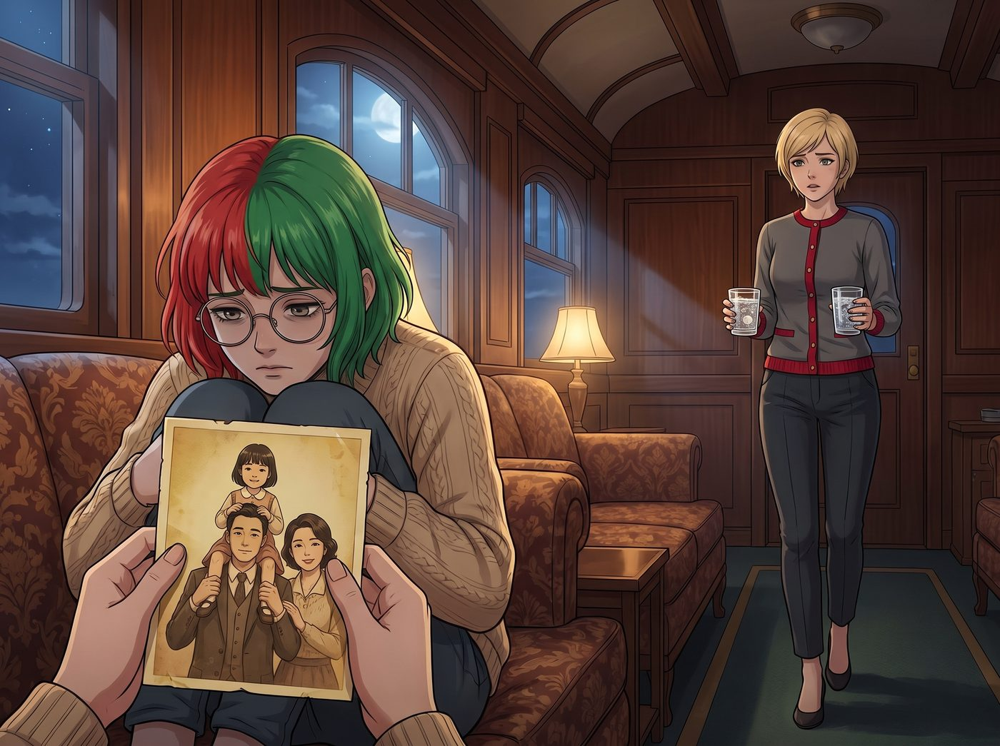

蜘蛛網與冰淇淋

二號車廂裡異常安靜，只剩下除濕機運轉的微弱嗡嗡聲。
沒有了 Chloe 的喧鬧和 Max 的快門聲，車廂的會客區顯得有些空蕩。Lily 破天荒地沒有坐在她的多螢幕工作站前，也沒有在計算任何報表。她蜷縮在沙發的一角，手裡捧著一張有些泛黃的舊照片。
照片上是一個七八歲的亞裔小女孩，手裡拿著一支冰淇淋，坐在父親的肩膀上，母親在一旁溫柔地笑著。那是 Lily 童年記憶裡，為數不多的、沒有任何條件與算計的溫暖瞬間。
Victoria 端著兩杯阿爾卑斯山氣泡水走過來，正準備像往常一樣嘲笑 Lily 幾句，卻在看到 Lily 的眼神時停住了腳步。
Lily 沒有哭，也沒有像之前在地下室那樣陷入應激崩潰。她的眼睛裡沒有恐懼，只有一種深不見底的、近乎死寂的悲傷。
一、不是直升機
「我以前一直以為，他們是直升機父母。」Lily 的聲音很輕，彷彿怕驚擾了照片裡的時光，「我以為他們是因為過度焦慮、害怕我在社會競爭中失敗，所以才在我的頭頂盤旋，過度干涉我的生活。」
她抬起頭，看著剛好端著無麩質餅乾走過來的 Kate，眼底泛起一層哀傷的水光。
「但我錯了。這個詞對他們來說太輕了，甚至是在美化他們。」
Lily 把照片輕輕放在桌面上。
「他們不是直升機，他們是蜘蛛。他們用盡一生的資源，吐出金光閃閃的絲線，為我織成了一張名為『愛與責任』的巨網。」
Victoria 放下水杯，眉頭微微皺起，在 Lily 身邊坐了下來。身為老錢家族的繼承人，她對這種權力與資源的控制遊戲，有著野獸般的直覺。
「在心理學上，健康的父母會把孩子看作一個獨立的人。」Lily 推了推圓框眼鏡，用她標誌性的冷靜語氣，進行著一場極度殘酷的自我解剖，「但他們缺乏這種邊界感，把我當成了他們的自我延伸。」
「他們願意為我花幾十萬買名牌、砸重金包裝我的履歷，不是為了我，而是因為我是他們在親戚和社交圈子裡炫耀的展示架。」
「所以，當妳試圖擁有自己的思想、試圖逃離那條既定的軌道時，」Victoria 接過話，語氣中透著一絲冰冷的共鳴，「他們會感到極度的分離焦慮。他們害怕分開，就想在物理和心理上把全家人焊死在一起。這叫病態共生。」
「是的。」
Lily 點了點頭，目光再次落回那張照片上，聲音終於抑制不住地顫抖起來。
「可是，Victoria 學姐，Kate 學姐……小時候的他們，明明是那麼毫無保留地愛我。照片裡的笑容是絕對真實的。為什麼我長大後，他們卻變成了吐絲結網的怪物？」
二、籠子與網
Kate 走過去，輕輕在 Lily 另一側坐下，握住了她冰冷的手。
「因為妳長大了，Lily。」Kate 溫柔地說。
「他們沒有變，是我變了。」Lily 哽咽著，「準確地說，是我們之間的權力關係和邊界，發生了根本的改變。」
她深吸了一口氣。
「當我還是個孩子時，我對他們是絕對依賴、絕對服從的。在那種絕對安全的結構下，他們願意釋放最純粹的愛。因為那時的我本來就在籠子裡，他們根本不需要蜘蛛網。」
Kate 握著她的手緊了緊，沒有打斷她。
Lily 閉上眼睛，眼淚無聲地滑落。
「但我長大了。我不再是那個在籠子裡的小孩，我變成了一個即將到期的家族投資項目。他們從來沒有學過，怎麼跟一個成年、獨立的人平等相處。他們的系統崩潰了，只能繼續用那套上位者照顧並支配下位者的舊程式，把我勒得越來越緊。」
車廂裡安靜得令人心碎。
這不是行政黑魔法的防禦，也不是被情感勒索後的創傷發作。這是一個十九歲的女孩，在極度清醒的狀態下，眼睜睜看著自己曾經最愛的父母，一點一點變成了陌生人。
三、沒有惡意的傷害
「他們就像是末日電影裡的喪屍。」
Lily 睜開滿是淚水的眼睛，給出了一個極度精準、又令人絕望的比喻。
「喪屍咬人沒有惡意，只是大腦裡只剩下傳染和同化的底層代碼。我父母逼我順從，也沒有主觀惡意，他們只是在執行他們那一代人被灌進腦子裡的東西。他們無法溝通，對邏輯免疫，只覺得只要我變得跟他們一樣，我就安全了。」
「沒有主觀惡意，不代表沒有客觀傷害。」
Victoria 緊緊盯著 Lily，語氣罕見地溫和，卻很堅定。
「Lily，妳不能因為他們小時候給過妳一支冰淇淋，現在就主動把脖子伸過去讓喪屍咬。」
「我知道。我不會讓他們咬的。」
Lily 反手握緊了 Kate 和 Victoria 的手。她的眼淚滴在手背上，但眼神裡透出一種破繭般的哀傷與決絕。
「我現在不覺得崩潰，也不覺得害怕了。我只是覺得悲傷。」她看著照片裡的父母，彷彿在看兩個已經逝去的人，「這是一場哀悼。我必須為那對我幻想中能夠永遠理解我、支持我的父母，舉辦一場葬禮。」
四、那個吃冰淇淋的小女孩
Kate 把 Lily 輕輕擁進懷裡，讓她靠在自己的肩膀上。
「保護好妳心裡那個吃冰淇淋的小女孩，Lily。」Kate 輕撫著她的頭髮，「把過去的愛好好收起來，也記得感謝它。然後，把現在的控制，一點一點剝開。」
Lily 在 Kate 的懷裡點了點頭。
Victoria 沒有說話，只是把那張照片從桌上拿起來，用袖口擦掉上面的一點灰，然後輕輕放回 Lily 的手邊。
那天晚上，Lily 沒有啟動任何行政防禦協議，也沒有去計算任何回報率。她只是在這個安靜的車廂裡，在兩個學姐的陪伴下，安靜地、徹底地，為她的童年流乾了眼淚。